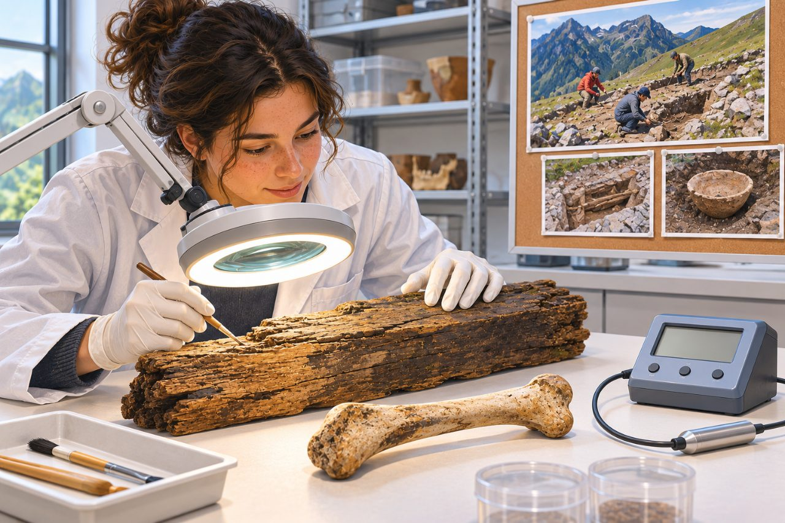
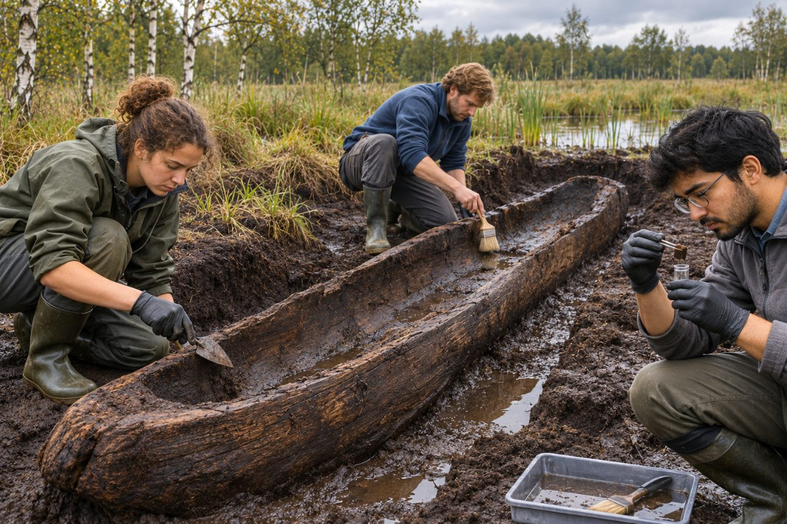

Aktivität und Becquerel

Denk mal nach: Ein Holzbalken und ein Knochen aus einer Ausgrabung. Kein Kalender, keine Inschrift. Wie kann man trotzdem herausfinden, wie alt sie sind?
Eine untersucht Funde aus alten Zeiten. Um ihr Alter zu bestimmen, misst sie die radioaktive Strahlung der Funde. Dafür muss man zuerst wissen, wie man Strahlung genau angibt.
In einem radioaktiven Stoff zerfallen ständig Atomkerne. Bei jedem wird Strahlung frei. Je mehr Kerne in einer Sekunde zerfallen, desto stärker strahlt der Stoff.
Die Zahl der Kernzerfälle pro Sekunde heißt (Formelzeichen A). Ihre Einheit ist das (Bq): 1 Bq = 1 Kernzerfall pro Sekunde.
Aus Modul 1 kennst du die : die Impulse in einer Minute. Eine Minute hat 60 Sekunden. Also rechnest du: Impulse pro Minute : 60 = Becquerel.
Wähle eine Probe. Der Zähler zählt eine Minute lang (im Zeitraffer in 3 Sekunden). Dann wird umgerechnet. Miss alle vier Proben – deine Werte landen in der Tabelle.
| Probe | Impulse in 1 Minute | Rechnung | Aktivität |
|---|---|---|---|
| Banane | |||
| Holz von heute | |||
| uralter Holzpfahl (gleich viel Holz) | |||
| Uranerz |
Vereinfacht: In diesem Labor erfasst der Zähler jeden Kernzerfall. Ein echter Zähler erwischt nur einen Teil davon.
MERKE
- Die Aktivität A gibt an, wie viele Atomkerne eines Stoffes in einer Sekunde zerfallen.
- Einheit: 1 Becquerel (Bq) = 1 Kernzerfall pro Sekunde.
- Umrechnen: Impulse pro Minute : 60 = Aktivität in Bq. Beispiel: 3 000 pro Minute : 60 = 50 Bq.
Was ist die Aktivität?
Tippe zuerst auf eine Lücke, dann auf das passende Wort. Zwei Wörter bleiben übrig.
Impulse pro Minute → Becquerel
Teile durch 60. Tippe links eine Zählrate an und dann rechts die passende Aktivität.
Woher C-14 kommt
Kohlenstoff steckt in jedem Lebewesen: in Holz, Blättern, Fleisch und Knochen. In der Natur gibt es drei des Kohlenstoffs: C-12, C-13 und . Nur C-14 ist radioaktiv.
C-14 ist sehr selten: Nur etwa eines von einer Billion Kohlenstoff-Atomen ist C-14. Trotzdem kann man seine Strahlung messen.
C-14 entsteht ständig neu – hoch oben in der . Dort trifft die auf . Dabei wird aus Stickstoff-14 Kohlenstoff-14.
Das C-14 wird Teil von (CO₂). Pflanzen nehmen es bei der auf, Tiere und Menschen über die Nahrung. Wie es weitergeht, zeigt die Animation.
MERKE
- C-14 ist ein radioaktives Isotop des Kohlenstoffs. Es entsteht in der Atmosphäre: Die Höhenstrahlung (kosmische Strahlung) verwandelt Stickstoff-14 in C-14.
- C-14 gelangt mit CO₂ in die Pflanzen und über die Nahrung in Tiere und Menschen.
- Solange ein Lebewesen lebt, hat es denselben C-14-Anteil wie die Luft. Nach dem Tod kommt kein C-14 mehr dazu – es zerfällt.
Der Weg des C-14
Bringe die Schritte mit den Pfeilen in die richtige Reihenfolge.
Was stimmt?
Erkläre in eigenen Worten ✨ KI prüft
Schreibe ganze Sätze oder Stichpunkte. Die KI achtet nur auf den Inhalt, nicht auf die Rechtschreibung.
Die Zerfallskurve von C-14
Aus Modul 3 kennst du die : Nach dieser Zeit ist die Hälfte der radioaktiven Kerne zerfallen. Bei C-14 sind das 5 730 Jahre.
C-14 zerfällt durch einen – und wird dabei wieder zu Stickstoff-14.
Nach 5 730 Jahren sind noch 50 % des C-14 da, nach 11 460 Jahren 25 %, nach 17 190 Jahren 12,5 % – in jeder Halbwertszeit halbiert sich der Rest.
Trägt man das in ein Schaubild ein, entsteht die . Die Animation zeigt, wie sie entsteht.
MERKE
- Halbwertszeit von C-14: 5 730 Jahre.
- Nach 1 Halbwertszeit ist noch die Hälfte (50 %) übrig, nach 2 ein Viertel (25 %), nach 3 ein Achtel (12,5 %).
- Die Zerfallskurve ist keine gerade Linie: Sie fällt erst steil, dann immer flacher. An ihr kann man ablesen, wie viel C-14 nach einer Zeit noch da ist.
Immer die Hälfte vom Rest
Tippe zuerst auf eine Lücke, dann auf das passende Wort. Zwei Wörter bleiben übrig.
Lies an der Zerfallskurve ab
Ötzi und andere Funde

Denk mal nach: Ein Boot aus einem Baumstamm liegt seit langer Zeit im Moor. Wie kann ein winziges Stück Holz verraten, wann der Baum dafür gefällt wurde?
Je weniger C-14 ein Fund noch enthält, desto älter ist er. Forscher messen die Strahlung einer Probe und vergleichen sie mit einem lebenden Wesen. So erhalten sie den C-14-Anteil in Prozent. An der Zerfallskurve lesen sie das Alter ab. Man sagt: Sie den Fund.
Berühmtes Beispiel: Ötzi. Wanderer fanden die im September 1991 in den Ötztaler Alpen. Sein Körper enthält noch gut die Hälfte des C-14 eines lebenden Menschen. Er lebte vor etwa 5 300 Jahren.
Die Methode hat Grenzen:
- Sie klappt nur bei Resten von : Holz, Knochen, Leder, Stoff, Holzkohle. Stein und Metall haben nie C-14 aus der Luft aufgenommen.
- Sie reicht nur bis etwa 50 000 Jahre. Danach ist so wenig C-14 übrig, dass man es nicht mehr messen kann.
- Das Ergebnis ist immer ungefähr: Messungen sind nie ganz genau, und das Ablesen an der Kurve auch nicht.
Wähle einen Fund. Der Punkt zeigt, wie viel C-14 er noch enthält, und die Hilfslinie führt zum Alter. Probiere alle fünf Funde und lies einmal selbst ab – tippe dazu auf die Kurve oder gib eine Prozentzahl ein.
| Fund | C-14 übrig | Alter (abgelesen) |
|---|---|---|
| Ötzi (Gletschermumie) | ||
| Einbaum aus einem Moor | ||
| Mammut-Knochen | ||
| Holzkohle aus einer Höhle | ||
| Dinosaurier-Knochen |
MERKE
- Je weniger C-14 ein Fund enthält, desto älter ist er. Das Alter liest man an der Zerfallskurve ab.
- Ötzi enthält noch etwa 53 % C-14 – er lebte vor rund 5 300 Jahren.
- Die C-14-Methode klappt nur bei Resten von Lebewesen und nur bis etwa 50 000 Jahre. Das Ergebnis ist immer ungefähr.
Welche Funde kann man mit C-14 datieren?
Tippe eine Karte an und dann den passenden Bereich.
Erkläre in eigenen Worten ✨ KI prüft
Schreibe ganze Sätze oder Stichpunkte. Die KI achtet nur auf den Inhalt, nicht auf die Rechtschreibung.
Training
Löse das Kreuzworträtsel
Tippe in ein Kästchen und schreibe. Tippst du ein Kästchen zweimal an, wechselt die Richtung. Ä und Ö schreibst du als AE und OE. Hängst du fest? Bei jeder Frage hilft 💡 Tipp – erst ein Hinweis, dann der Anfangsbuchstabe. Mit 📋 Wörter zeigen siehst du alle Lösungswörter.
Kreuze an
Profi-Check, Lernkarten und Regelheft
Altersbestimmung mit der C-14-Methode
Aktivität A = Anzahl der Kernzerfälle in einer Sekunde. Einheit: 1 Becquerel (Bq) = 1 Kernzerfall pro Sekunde. Impulse pro Minute : 60 = Aktivität in Bq (3 000 pro Minute : 60 = 50 Bq).
So entsteht C-14 (radioaktives Isotop des Kohlenstoffs): Die Höhenstrahlung verwandelt in der Atmosphäre Stickstoff-14 in Kohlenstoff-14. Weg: C-14 → CO₂ → Pflanzen (Fotosynthese) → Tiere und Menschen (Nahrung).
Lebewesen haben denselben C-14-Anteil wie die Luft. Nach dem Tod kommt kein C-14 mehr dazu. Es zerfällt mit der Halbwertszeit 5 730 Jahre.
| Jahre nach dem Tod | 0 | 5 730 | 11 460 | 17 190 | 22 920 |
|---|---|---|---|---|---|
| C-14 übrig | 100 % | 50 % | 25 % | 12,5 % | 6,25 % |
Je weniger C-14, desto älter der Fund. Das Alter liest man an der Zerfallskurve ab: Ötzi hat noch etwa 53 % C-14 → er lebte vor rund 5 300 Jahren. Das Ergebnis ist nur ungefähr.
Grenzen: nur Reste von Lebewesen (Holz, Knochen, Leder, Stoff, Holzkohle), kein Stein oder Metall; nur bis etwa 50 000 Jahre.
Wortspeicher
Alle Fachbegriffe dieses Moduls auf einen Blick.
Wie geht es weiter?
Radioaktive Strahlung ist nützlich – sie kann aber auch schaden. In Modul 5 erfährst du, was Strahlung im Körper anrichtet und wie man die Strahlendosis angibt.